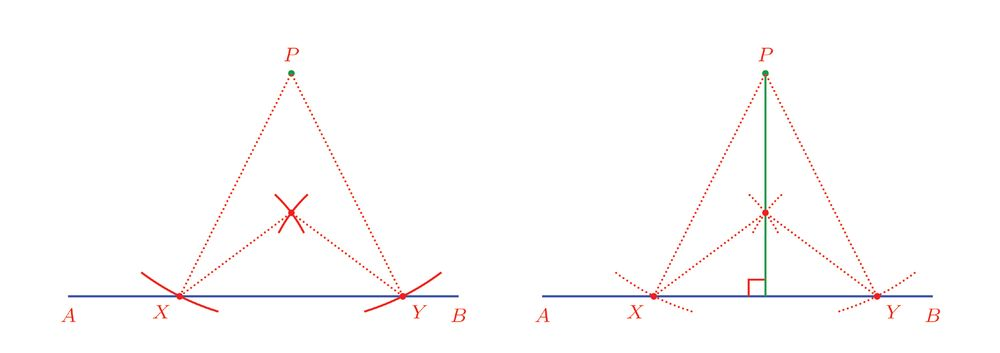
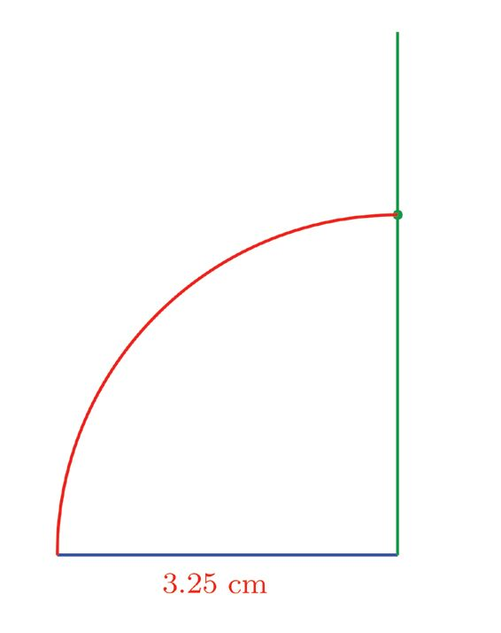
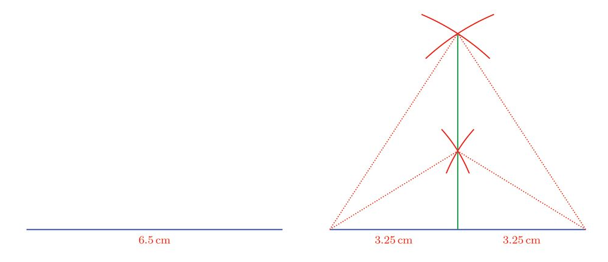
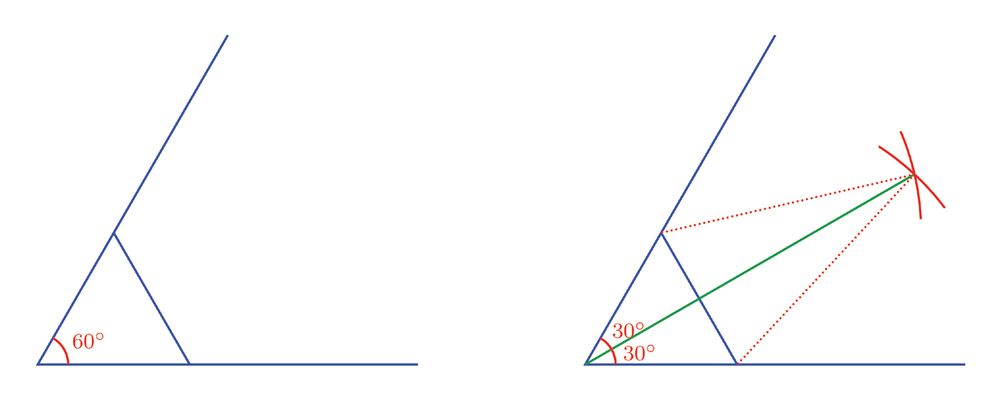
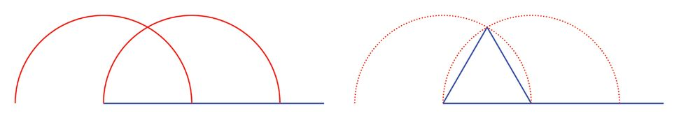
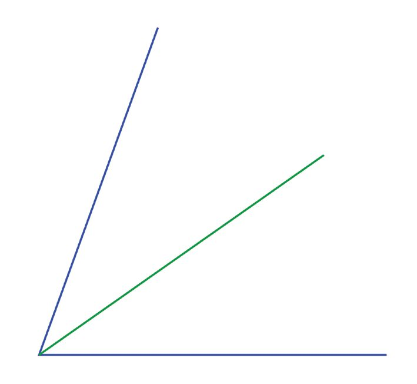

All lines which divide a line into two equal parts are called bisectors of that line.
Only one of them is perpendicular to the line also:
This bisector is called the perpendicular bisector of the line.
This can be put another way.
We can draw a perpendicular to a line through any point on it:
So by Pythagoras' Theorem,
AP2 = AM2 + MP2
BP2 = BM2 + MP2
(The section, Rectangle and square of the lesson Squares and right triangles in the
class 7 textbook).
What can we say about the lengths AM and BM in these equations?
Since PM bisects AB, we have AM = BM.
So, what about AP and BP?
AP = BP
Let's write what we have seen as a general result.
Any point on the perpendicular bisector of a line is at the same distance from its
endpoints
This raises a question: is this true the other way round?
That is, if a point is at the same distance from the endpoints of a line, does it lie on the
perpendicular bisector of that line?
If we select the Perpendicular
Bisector tool in GeoGebra and
click on a line AB we get its
perpendicular bisector. Mark a point
C on this bisector, join AC and BC,
and mark their lengths. Move C on the
bisector and check these lengths.
In the picture, P is a point at the same distance from
the ends A and B of the line AB.
We want to check whether P is on the perpendicular bisector of AB.
We can slightly rephrase our question: does the
perpendicular from P to AB bisect AB?
Lets draw this perpendicular:
The point P is at the same distance from A and B; that is AP = PB. So, APB is an
isosceles triangle. In this triangle, the perpendicular from the vertex P where the equal
sides meet, to its opposite side AB, bisects this side (the section Isosceles triangles of
the lesson Equal Triangles).
Thus the perpendicular from P is the perpendicular bisector of AB and so, the result stated above is true the other way round also.
In GeoGebra, make a slider
a with Min:0, Max:10,
Increment:0.01. Draw a line
AB and draw circles of radius a
centered at A and B. Mark the points of
According to this result, if we choose two points intersection of these circles and select
which are at equal distances from the endpoints of a the option Trace On by right clicking
line, these two points would be on the perpendicular them. Now right click on the slider and
bisector of that line. So, the perpendicular bisector of select Animation On. See what we get.
Any point at the same distance from the
endpoints of a line lies on its perpendicular
bisector
the line is the line joining these two points (To draw
a line, we need just two points on it, right?).
The points marked may be on either side of the line:
We can use this to draw the perpendicular to a line through a specified point also, without using a set square or protractor:
For example, suppose we want to draw the perpendicular to the line AB in the picture
below, through the point C on it:
If we mark off a small part of AB with C as midpoint and draw the perpendicular bisector
of this part, it would be perpendicular to AB also, isn't it?
For that first mark points X and Y on AB on either side of C, at the same distance from it:
Now C is the midpoint of XY, so that the perpendicular bisector of XY passes through
C. To get another point on this perpendicular bisector, we need only mark a point at the
same distance from X and Y. Now we can draw a perpendicular line to AB through C;
isn't it?
There is a similar method to draw the perpendicular to a line from a point not on it.
First mark two points on the line at the same distance from the point:
In the picture above, X and Y are points on AB at the same distance from P.
So, P is a point on the perpendicular bisector of XY.
If we mark one more point at equal distances from X and Y, we would get another point
on the perpendicular bisector of XY. Draw a line passing through this point and P. And
this bisector is perpendicular to AB also:
105
Page 106
Figure fig_ch07_p106_01 (Page 106)

Figure fig_ch07_p106_02 (Page 106)

Figure fig_ch07_p106_03 (Page 106)

Figure fig_ch07_p106_04 (Page 106)
Mathematics VIII
Now let's see how we can draw a square of side 3.25 centimetres, using these.
Drawing a line 6.5 centimetres long and its perpendicular bisector gives us a line 3.25
centimetres long:
Marking half the length of the line on this bisector gives us two sides of the square:
(At this point, we can use a protractor or set square to draw perpendiculars and to get the
triangle, as done in earlier classes; here we draw without such instruments).
To get the third side, we draw the perpendicular from the other end of the bottom side
and mark the length of the side on it also. (To draw this perpendicular, we will have to
extend the bottom side a bit to the left):
Now joining the top ends of the perpendiculars gives us the square (why?).
Rope math
Note that we used only ruler and compass to draw this
square.
Draw the figures below using only ruler and
compass
(1) Square of sides 4 14 centimetres
(2) Rectangle of sides 5 14 centimetres and 3 14
centimetres
(3) Equilateral triangle of side
2.75 centimetres
(4) Triangle of area 9 square centimetres and
one side 4.5 centimetres
You might have heard about the
book, Elements, the definitive book
on ancient geometry. In it, Euclid
considers only figures that can
be drawn using lines and circles.
In other words, only figures that
can be drawn with an unmarked
ruler (called a straight-edge) and a
compass.
Why is this so? During the ancient
ages, ropes or strings were used to
measure and draw. Lines and circles
are the only figures we can draw
using rope. A piece of rope stretched
between two pegs gave a line; if one
is pulled up and rotated around the
other, we get a circle.
Now when instruments can be
made to draw various figures, such
constructions using only straightedge and compass have only
academic or historical value.
Rhombuses
Draw an angle and mark the same distance on its sides:
Next draw the line parallel to the horizontal line through the marked point on the top,
and the line parallel to the slanted line through the marked point at the bottom to make
a quadrilateral:
This is a parallelogram, isn't it? So, the opposite sides are of the same length (the section
Two angles of the lesson Equal Triangles).
The first two lines drawn are of the same length. Thus this parallelogram has equal sides.
A parallelogram with all sides of the same length is called a rhombus.
Look at one of its diagonals. It joins two vertices and the distance from these two
vertices to the other two vertices are equal:
So, the other two vertices are on the perpendicular bisector of the diagonal; in other
words, the second diagonal, which joins the other two vertices, is the perpendicular
bisector of the first diagonal.
In the same way if we start by drawing the shorter diagonal first, we can see that the
longer diagonal is its perpendicular bisector.
We state this as a general result:
In any rhombus, the diagonals are perpendicular bisectors of each other
There is an immediate question: if we draw a quadrilateral with its diagonals
perpendicular bisectors of each other, would it be rhombus ?
First let's draw such a quadrilateral
For that, draw a line and its perpendicular bisector. Mark equal distances from the
midpoint on the bisector on both sides:
Joining these points to the endpoints of the first line gives us a quadrilateral in which
diagonals are perpendicular bisectors of each other:
Since the diagonals are perpendicular to each other, they divide the quadrilateral into
four right triangles.
Since the red line bisects the green line, the green sides of the triangles are of the same
length; and since the green line bisects the red line, the red sides of the triangles are of
the same length.
So, the blue lines, which are the hypotenuses of these four right triangles are also of the
same length, by Pythagoras' Theorem.
In other words, all sides of this quadrilateral are of the same length.
Now we must check whether the pairs of opposite sides of this quadrilateral are parallel.
First let's look at the top-left and bottom-right sides:
To see whether these are parallel, we need only check the angles marked in the picture
below:
Since the lengths of the sides of the triangles in the picture are the same, these angles are
equal; and so the blue lines are parallel.
Thus in the quadrilateral one pair of sides are equal and parallel; and so, it is a
parallelogram (the section Two sides of the lesson Equal Triangles).
What did we see here?
If the diagonals of a quadrilateral are perpendicular bisectors of each other, then
the quadrilateral is a rhombus
What if the diagonals are also equal?
All four right triangle making up the rhombus become
isosceles and so the angle at each vertex becomes 90°.
This makes the rhombus a square:
So, here's a new way to draw a square.
Draw a square with diagonals 6 centimetres.
(1) Draw a rhombus with each pair of lengths given below for the diagonals:
(i) 6 centimetres, 4 centimetres
(ii) 6.5 centimetres, 4 centimetres
(iii) 6 centimetres, 4.5 centimetres
(2) The picture shows the quadrilateral formed by joining the midpoints of a
rectangle:
(i) Are the diagonals of this quadrilateral parallel to the sides of the rectangle? Why?
(ii) Is this quadrilateral a rhombus? Why?
(3) Draw a rhombus with diagonals 6.5 centimetres and 4.5 centimetres.
(4) Prove that each diagonal of a rhombus bisects the angles at the vertices it
joins.
(5) Draw a square with diagonals 7 centimetres.
Bisector of an angle
A line which divides an angle into two equal parts is called the bisector of the angle:
How do we draw the bisector of a given angle?
We have seen that in an isosceles triangle, the perpendicular from the vertex joining the
equal sides to the opposite side, bisects the angle at this vertex.
If we mark points on the sides of the angle, at the same distance from the vertex, we get
an isosceles triangle; and the perpendicular from the vertex of the angle to the base of
the isosceles triangle gives the bisector of the angle:
112
Page 113
Figure fig_ch07_p113_01 (Page 113)

Figure fig_ch07_p113_02 (Page 113)

Figure fig_ch07_p113_03 (Page 113)

Figure fig_ch07_p113_04 (Page 113)
Bisectors
We can use this to draw a 30° angle using only ruler and compass.
First we draw a 60° angle.
For that we need only draw a line and draw an equilateral triangle with one of its ends
as a vertex (the section, Star picture of the lesson Triangles in the class 7 textbook).
Since each angle of an equilateral triangle is 60°, we have such an angle at one end of
the line drawn first. Drawing its bisector, we get a 30° angle:
We have seen that any point on the perpendicular bisector of a line is at the same
distance from the end points of that line; and on the other hand, any point which is at the
same distance from the endpoints of a line is on the perpendicular bisector of that line.
Angle bisectors also have a similar property.
To see this, draw an angle and its bisector.
From some point on the bisector, draw perpendiculars to the sides of the angle:
In the second picture we have two right triangles,
Draw an angle ABC in
one on top and other at the bottom. Since the green
GeoGebra. Select the Angle
line is the bisector of the angle, one angle of a
Bisector tool and click on A, B,
triangle is equal to one angle of the other. Since both
are right triangles, all three angles of one triangle are C to draw the bisector of the angle at
B. Mark a point D on this bisector and
equal to the angles of the other.
draw perpendiculars from this point
The triangles have the same hypotenuse and the
angles at its ends are also the same. So, the red sides
of the triangles are of equal length. This means, the
perpendicular distances from any point on the angle
bisector to the sides are equal.
to AB and BC. Mark the points E and
F where these perpendiculars meet AB
and BC. Draw the lines DE and DF and
mark their lengths. Move D along the
bisector and check these lengths.
On the other hand, if the perpendicular distances from a point to the sides of an angle are
equal, does this point lie on the bisector of that angle?
Imagine such a point and the line joining it to the vertex of the angle:
We get two right triangles with the same hypotenuse as before; and their red sides are
equal. So, by Pythagoras' Theorem, their third sides are also equal. Since the sides of the
two triangles are of the same length, their angles are also equal. The angles at the left
vertex of these triangles are just the parts into which the green line divides the original
angle. Since these are equal, the green line is the bisector of this angle.
So, what can we say about the bisector of an angle?
Any point on the bisector of an angle is at the same perpendicular distance from
the sides of the angle; on the other hand, any point at the same perpendicular
distance from two sides of an angle lies on the bisector of that angle
(1) Draw the angles below:
(i) 37 12
%
(ii) 62 12
%
(2) Use only ruler and compass to draw the following:
(i) The angles below
(a) 45°
(b) 135°
(c) 75°
(d) 15°
(ii) The triangle with one side of length 6 centimetres and angles
1%
1%
67 2 and 22 2 at its ends.